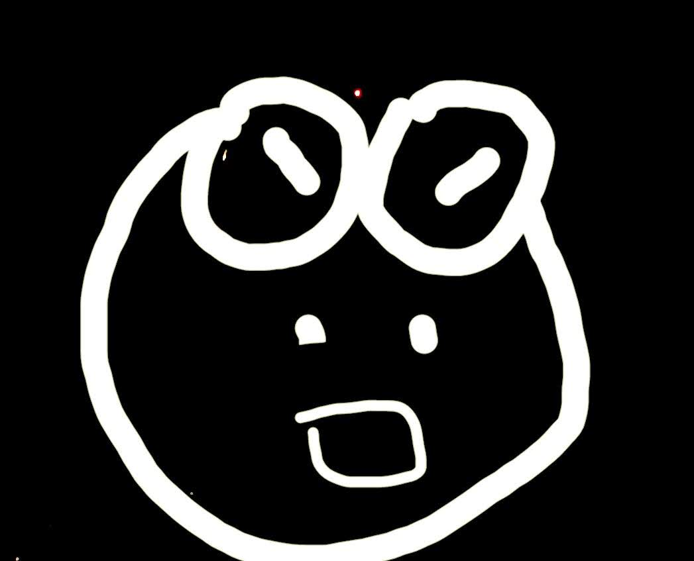

プシュー公式プロフィール

好きな食べ物
ハーゲンダッツ、どんぶり系（基本何でも食べる）
好きな動画
学園ベビーシッターズ、アニメアイチュウ、金装のヴェルメイユ、金色のガッシュベル、デジモンアドベンチャー、ゴン・GON、サンダーバード、あたしンち、21エモン、こち亀、ケロロ軍曹、ルパン三世、PSYCO-PASS、思い出など
好きな音楽アーティスト
one ok rock、アレキサンドロス、水前寺清子、フィンガー５、ビギン、エマニエル・ルイス、近藤利樹、マティー・B、タンポポ合唱団、矢沢洋子、メイソンラムジーなど
好きなゲームは
オセロ、トランプゲーム、ピクロスなど
好きな趣味
プログラミング （HTML、CSS、JS、C、PY、PHP、BASIC（※完璧に覚えたわけではないし独学））、電子工作（音が鳴るもの）、考える事（ほぼ何でも）、工作（小屋づくり、小物づくり）、料理（オムライス、チャーハン、半熟目玉焼き）、縫い物（穴あき修正、小物づくり）、理科（電気関連）、農業（農作物育て）
生年月日
2003年12月24日 19歳のしょうもない青年です。
もっと見る
コメント
このサービス（ページ）では、できるだけ依存しない、できるだけオープンソースで（HTML版ソースコードはこちら）（PHP版ソースコードはこちら）、サービス上での情報収集をできるだけ行わないをモットーに作成してます。 このページは、1からWindows標準NotePad.exeを使用して、コーディングしてます。プシューサービスに完成は存在しません。そして変化し続けます、変化には期間や期限は存在しません。 どうでもよいですがネタとして言います。私は、ASD、ADHDを、持ってます。